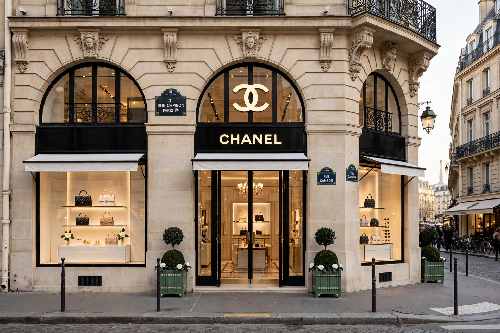

| Industry | Luxury fashion, fragrance, cosmetics, jewellery |
|---|---|
| Founded | 1910, Paris |
| Founder | Gabrielle "Coco" Chanel |
| Owners | Wertheimer family (private) |
Chanel is a French luxury house founded by Coco Chanel, known for the little black dress, tweed suit, 2.55 handbag and Chanel No. 5 perfume.
History
Gabrielle Chanel opened a Paris millinery shop in 1910 and boutiques in Deauville and Biarritz, popularising relaxed jersey clothing. No. 5 launched in 1921. Closed during the Second World War, the house reopened in 1954. Karl Lagerfeld, creative director 1983-2019, revived and globalised it; Virginie Viard succeeded him.
Products
Haute couture, ready-to-wear, handbags, fragrances including No. 5 and Coco Mademoiselle, make-up, fine jewellery and watches such as the J12.
Business
Privately held by the Wertheimers, Chanel famously does not sell fashion online, preserving boutique exclusivity.